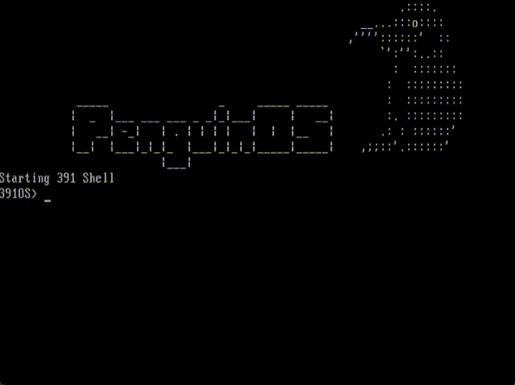

Work done for ECE 391's extra credit competition.
In the spring semester of 2020, the authors and I all worked together for the final project of ECE 391, Computer Systems Engineering. We were tasked with creating an operation system with interrupt support, scheduling, and read-only file system, among other things. These basic requirements are not the focus of this overview. Instead, we present features developed for the extra credit competition in the course, in which our operating system placed 3rd.
Note: The code is not publicly available, as it may serve as a reference to current students of the course.
The project only required support for alphanumeric, shift, and ctrl keystrokes. We implemented an easily-extensible keyboard driver with support for all of the keystrokes. This is notable, as this required the ability to process multi-byte scan codes, and efficiently map those codes to handlers for special keystrokes. In our driver, this is done with a home-baked dictionary and hash function.
The scan codes are first hashed into an index, and the pointer to the scan_code_list retrieved from the below table using the index.
# List pointers corresponding to hashed scan codes
keyboard_hash_table:
.long 0
.long scan_code_list_1
.long 0
.long 0
.long 0
.long scan_code_list_5
.long 0
.long scan_code_list_7
.long 0
.long scan_code_list_9
.long scan_code_list_10
.long scan_code_list_11
.long scan_code_list_12
.long scan_code_list_13
.long scan_code_list_14
.long scan_code_list_15
.long scan_code_list_16
.long scan_code_list_17
.long scan_code_list_18
... (continues further)Consider a scan code which points to scan_code_list_18. After following the pointer, we find two possible scan codes at the index.
We compare the scan code value to the first long in all elements of the list, and then make used of the make or break handler pointers once we find the right element, depending
on whether the code is a make (key pressed) code or a break (key released) code. List length is bounded by 3 by design and so this process is O(1)
scan_code_list_18:
.long 2
# F9
.long 67
.long default_make_handler # Make
.long default_break_handler # Break
# Keypad /
.long 57397
.long default_make_handler # Make
.long default_break_handler # BreakWe developed a very basic memory allocation scheme, able to allocate memory via slab caches.
This functionality was accessed via system calls:
malloc: allocate memory
free: free memory
We added the ability to write to the file system, an extension from the read-only system required in the project.
The file system was written to via system calls added to our OS, listed below:
create: create a new file
write: modified to be able to write to files
We implemented some additional system calls, needed for our
homegrown version of vim:
cursor: set the position of the cursor on the screen
getc: get the last character typed by the user, if any
We implemented a basic rendition of vim from scratch as a user-level program. This required making use of the full-support keyboard driver, read/write file system, malloc, as well as the miscellaneous system calls we added to the OS.

We implemented a shutdown sequence, adding a fun animation.